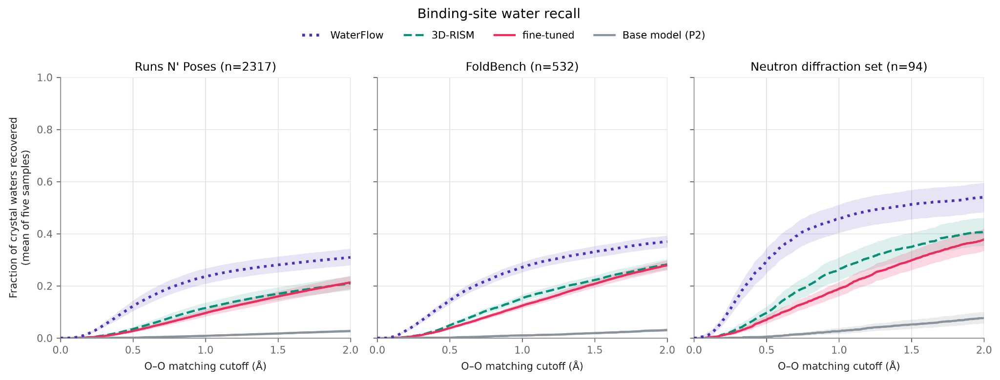
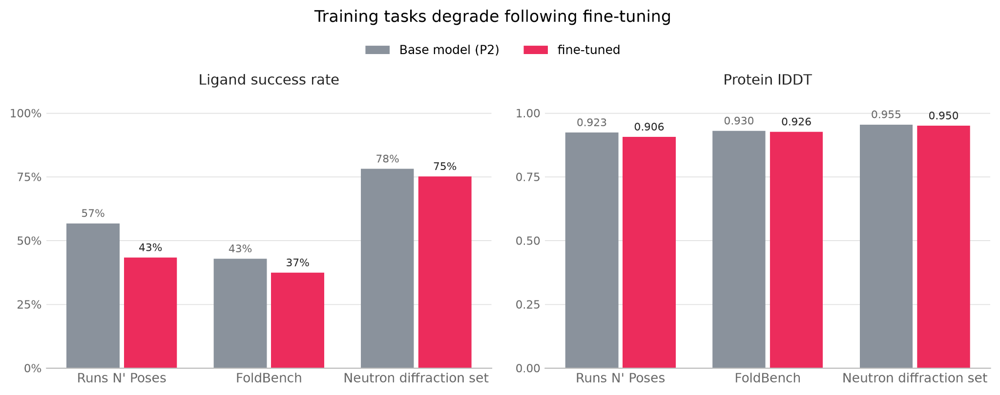

Summary
We are releasing OpenFold3-P2-ft-water, the first publicly available co-folding model that can predict binding-site water molecules.
While co-folding models excel at macromolecular geometry, resolving solvent-mediated interactions has remained an open challenge in structural biology. OpenFold3-P2-ft-water bridges this gap: it captures experimentally verified pocket waters significantly better than baseline OpenFold3-P2, delivering recall on par with standard physics-based methods like 3D-RISM.
Try it As an early community preview, the model is available for inference through the OpenFold Portal for evaluation and feedback. We plan to release the weights, code, training data, and methods in a subsequent open-source release.
Introduction
Co-folding models have emerged as powerful tools for early-stage drug discovery. These models take in protein sequence and ligand as inputs to predict the 3D coordinates of the resulting structure complex. Since AlphaFold3’s debut in 2024, over 20 co-folding models have been released, including the fully open-source OpenFold3. These models work across multiple modalities: proteins, ligands, DNA/RNA, and ions, making them useful for both small-molecule and biologics discovery.
One modality absent in all currently open-source models is water. Our bodies are made up of 60% water, by mass, and water provides the environment in which our cells operate and proteins fold and interact. Water molecules can be identified in structural biology experiments, occupying key protein pockets, mediating both drug–protein and protein–protein interfaces. In drug design, understanding when to preserve, displace, or reorganize these key waters is often crucial to improving potency and selectivity of drugs, and is at times associated with unexpected “activity cliffs” when key structural waters are displaced. Modeling this modality is thus a central challenge, a key capability missing in current co-folding models and their many downstream tasks, including affinity prediction.
We present an early release of our OpenFold3-P2-ft-water model, based on OpenFold3-P2, which provides end-to-end co-folding of protein–small-molecule complexes with inclusion of waters. We first showcased this model during the co-folding summit in May 2026 and now want to provide it to the wider community. We’re working towards a full release (data, methods, training code, and checkpoint) in 2027, and we want to engage the community in evaluating this capability. For protein–protein and protein–ligand co-folding a range of benchmarks and metrics exist; evaluation of water co-folding is a new challenge to the community. We present the outline of our methodology, data processing, and approach to evaluation, and provide an interactive server allowing the community to evaluate the capabilities of our models.
Methods
Our co-folding water model was obtained by fine-tuning the OpenFold3-P2 co-folding model, trained on the PDB with a 2021 cutoff date (180,010 entries). PDB entries were filtered to remove structures with resolution greater than 2.5 Å, and waters farther than 5 Å from the heavy atoms of small-molecule ligands (excluding crystallographic aids) were stripped. We treated the remaining waters as being in the binding site. For each entry in the training set, these additional water tokens were included in the training data points; other parts of the query remained unchanged (MSA, template hits).
Waters were treated as indistinguishable from one another; that is, there is no penalty for swapping the positions of water A and water B, relative to ground-truth coordinates. Before computing any loss, we aligned the prediction on the protein and ligand, then matched predicted waters one-to-one to crystal waters with the Hungarian algorithm. During training, we subsampled binding-site waters within a randomly sampled distance (0 to 5 Å) of any ligand heavy atom in the ground-truth structure, so the model saw anything from a dry pocket to a full first hydration shell.
A note on waters in X-ray structures
It is often said that all models are wrong, but some are useful. X-ray crystal structures, which make up the overwhelming majority of the PDB, are models produced by fitting atoms to best explain experimental electron density, but ambiguous electron densities can lead to incorrect handling of water molecules.
A model fine-tuned on deposited waters learns what crystallographers chose to model, but the crystal structure doesn’t always reflect physical reality. In some cases, the addition of poorly substantiated water molecules during structure refinement can improve the PDB model’s R-factor, a standard metric of model fit. Rfree, a cross-validation statistic that measures overfitting, can miss this kind of “R-factor gaming”. In this work, we filtered training data by resolution, a common but flawed proxy for data quality. Fine-tuning results have been promising, but noisy input data is expected to impact model performance. By filtering PDB structures, a “highly trustworthy” set of structures can be built, reducing the number of data points but improving quality; this tradeoff between coverage and quality must be evaluated.
An alternative One approach we’ve considered (but not implemented) is to regenerate existing PDB models from their underlying electron densities using a consistent procedure (PDB-REDO), allowing a model to be trained only on the individual water molecules with good evidence.
Evaluation
Recall is a natural metric for assessing water placement, but the optimal choice of cutoff for water assignment is unclear. A water molecule’s diameter is about 2.8 Å, so beyond that there is no overlap. Recent work has used values ranging from 0.5 to 2.0 Å. We use cumulative plots of water recall as a function of oxygen–oxygen matching cutoff distance, and report recall at 1 Å as a baseline. When the number of waters predicted is equal to the ground-truth number of binding-site waters and 1:1 Hungarian assignment is used with a cutoff (as in this evaluation), recall is equal to precision and therefore F1. In cases where more waters than are present in the crystal structure binding site are requested, precision and F1 will be informative.
To evaluate the accuracy of protein and ligand pose, we use metrics implemented in FoldBench: protein lDDT and success rate. Success rate is defined as the percentage of ligands with a local fit measured by BiSyRMSD (which accounts for binding-site alignment and ligand symmetry) < 2.0 Å and a protein–ligand interface lDDT > 0.8.
Because this is the first water-aware co-folding model to be released publicly, there are no comparable models to test against. Instead, we briefly summarize the state of the field:
- BoltzW, an ML model produced by fine-tuning the Boltz-2 co-folding model on highly ordered waters, is closed source but reports an average recall of less than 0.3 on a dataset of 88 structures chosen because their model can fold them correctly.
- WaterFlow is an ML model trained to predict ordered water molecules, but it requires a protein structure as input. It is therefore not a straightforward comparison to our co-folding model, which must predict the protein–ligand structure in addition to the positions of water molecules. We nonetheless include WaterFlow for the sake of comparison.
- 3D-RISM is an established statistical-mechanical theory of solvation that calculates solvent distributions around a solute, which can then be processed to identify discrete water sites. Although it also requires an input structure, we chose 3D-RISM as a reference method for predicting solvent distributions around molecular structures. Because the number of waters placed by 3D-RISM cannot be controlled explicitly, we limit our evaluation of 3D-RISM’s output to the N highest-occupancy water sites (as calculated by 3D-RISM) within the binding site (defined as within 5 Å of the ligand), where N is the number of waters in the crystal structure’s binding site.
Because no benchmarks for holo structure water placement yet exist, we repurpose two popular co-folding benchmarks: Runs N’ Poses and FoldBench’s protein–ligand dataset. From these existing datasets, we exclude all structures with zero binding-site waters. We also introduce a neutron diffraction dataset of 94 structures curated from the PDB, whose water placements are methodologically very trustworthy. Although the neutron diffraction dataset structures were not held out from fine-tuning, they are the strongest ground truth available. The neutron diffraction experiments can more accurately measure water density, and we report them as a measure of how well the model fits trustworthy labels, not as evidence of generalization, which rests on the two held-out sets.
Results

We compared the fine-tuned model to the water-naïve, no-fine-tuning base model across three benchmarks: Runs N’ Poses, FoldBench, and the neutron diffraction set. Runs N’ Poses and FoldBench contain only structures released after the model’s 2021 training cutoff, so they are the held-out tests. Most of the neutron diffraction structures (70 of 94) were released before that cutoff, so the model has seen some during fine-tuning. Both the fine-tuned and base models were told how many crystallographic waters sit within 5 Å of the ligand, so any difference comes from where they put the waters, not how many. This is an evaluation of water-placement accuracy under a known water-count assumption; it does not yet measure the model’s ability to predict how many waters occupy a binding site.
How close does a predicted water have to be to count as correct? Rather than pick one cutoff, Figure 1 shows the cumulative fraction of crystal binding-site waters recovered as the matching distance grows from 0 to 2 Å. Each predicted water can match at most one crystal water.
The base model recovers almost no crystal waters at any cutoff: 1% within 1 Å on Runs N’ Poses and FoldBench, and 3% on the neutron diffraction set. The fine-tuned model recovers 10% within 1 Å on Runs N’ Poses, 12% on FoldBench, and 19% on the neutron diffraction set. The improvement is broad rather than driven by a few targets: recall goes up for 1,573 of 2,317 Runs N’ Poses targets, 357 of 532 FoldBench targets, and 75 of 94 neutron diffraction targets.
On FoldBench, the fine-tuned model nearly matches 3D-RISM. Within 1 Å, 3D-RISM recovers 15% of crystal waters and the model 12%, a small but statistically significant difference (p < 0.001). The gap closes at looser cutoffs: within 2 Å the two are indistinguishable (both 28%). We interpret this pattern to indicate that the model puts its waters in roughly the right places as often as 3D-RISM does, but 3D-RISM places them more precisely. The neutron diffraction set shows the same pattern: 3D-RISM is ahead within 1 Å (26% vs 19%).
We also compared against WaterFlow, a generative model trained specifically to place waters around a given structure. We gave it the same inputs as 3D-RISM: the fine-tuned model’s predicted structure with its waters removed, keeping only its N most confident placements in the binding site. WaterFlow recovers the most crystal waters of the three methods on every benchmark: within 1 Å, 24% on Runs N’ Poses, 27% on FoldBench and 46% on the neutron diffraction set, roughly twice the fine-tuned model’s recall. Because WaterFlow and 3D-RISM worked from the same predicted structures, the gap shows that the fine-tuned model has room to place its own waters better, not that its structures are wrong.

The accuracy cost of fine-tuning on waters is mostly on ligand pose. The fine-tuned model’s ligand success rate is lower than the base model on all three benchmarks (Figure 2). The drop is largest on Runs N’ Poses, from 57% to 43%, and smaller on FoldBench, from 43% to 37%. On the neutron diffraction set it falls from 78% to 75%. Most ligands are unaffected either way: on Runs N’ Poses, the majority of cases (1,681 of 2,718) have the same outcome under both models, while 804 get worse and 233 get better. Improving ligand pose prediction in conjunction with water fine-tuning will be a focus of our future work. We anticipate that accurate water placement will ultimately improve pose prediction, although more work is needed in this direction.
Protein fold prediction degrades slightly with fine-tuning. Protein lDDT against the experimental structure drops by 1.7 lDDT points on Runs N’ Poses, and by less than half a point on FoldBench and the neutron diffraction set. The Runs N’ Poses loss is small on average but widespread: 1,264 of 2,317 targets lose more than one point and 87 gain that much. Supplying the water count can matter: run without requesting any waters, the fine-tuned model loses 1.9 points on FoldBench as well, and giving it the count recovers almost all of that (data not shown). On Runs N’ Poses the count does not help, and the loss is the same with or without it.
In summary, fine-tuning turns a model that places essentially no binding-site waters correctly into one that places 10% to 20% of them within 1 Å of their experimental positions. This improvement comes at the cost of a 3 to 13 percentage-point decrease in ligand pose success, depending on the benchmark, and a reduction of less than 2 lDDT points in protein accuracy.
We do not expect this tradeoff to be fundamental. Ordered waters can play important roles in protein–ligand recognition: they mediate hydrogen bonds between proteins and ligands, satisfy otherwise unsatisfied polar groups, and fill cavities at the protein–ligand interface. Correctly placing these waters could therefore provide additional constraints on the positions of the ligand and surrounding side chains. We hypothesize that future models will be able to exploit these interactions through explicit water placement during inference to improve protein and ligand structure prediction, benefiting downstream applications such as binding affinity prediction.
Future directions
The current model is based on the OpenFold3-P2 checkpoint released earlier this year, and the next iteration will be based on the OpenBind-0 model and trained up to a 2025 data cutoff. Although it will still be developed by fine-tuning an existing water-naïve model, a potential direction for future work is to incorporate waters from the outset of training, which may yield further improvements in performance.
Water placement is currently restricted to the vicinity of small-molecule ligands. While this makes the dataset smaller and inference computationally cheaper, our approach can be extended to protein–protein interfaces where waters also play an important role. Further, it could be beneficial to predict the full protein hydration shell, rather than just binding interfaces – although these interfaces remain most crucial to our drug discovery users.
Today, the user has to specify the number of waters at inference. Our recommendation is to estimate the ground-truth number of waters in the binding pocket based on related crystallographic systems. Future releases will include a confidence head that will decide, in an autoregressive manner, when to stop placing additional waters.
As summarized in Figure 2, fine-tuning with water appeared to cause a slight degradation in protein–ligand co-folding performance for this model. We don’t think this degradation is inherent to the water co-folding problem, and preliminary analysis of our forthcoming OpenBind-0-ft-water co-folding model does not show this degradation.
Conclusions
We believe that inclusion of waters in co-folding represents a significant milestone. For these models to reflect physical reality, they have to be extended to additional capabilities (like water modeling). We anticipate this will improve not just the co-folding performance but also unlock downstream modeling tasks such as affinity prediction. Improving these models will allow for faster discovery of novel medicines, bringing them to patients around the world.
We are introducing an early preview of water-aware, end-to-end protein–ligand co-folding with OpenFold3. We want to engage with the community, improve the model, its architecture, and evaluation before the final release.
For the final release, the entire dataset, code, and checkpoints will be made available, in the true spirit of open science that drives the OpenFold Consortium and the entire OMSF ecosystem. Today, we’re making the water co-folding available via our web server, the Portal. We invite you to try out the model and provide us with your feedback. Users can submit protein–ligand systems through the Portal and request explicit binding-site waters, enabling direct exploration of predicted hydration patterns around ligand-binding pockets.
Acknowledgements
Community collaboration has become increasingly impactful in advancing the state of drug discovery methods. This release could not have happened without the collaborative spirit of the consortium. We want to thank our keystone members, the AlQuraishi Lab at Columbia, as well as the Kurtzman Lab, and Greg Warren. Industry collaborators from the consortium have joined this project and made it possible: AMD Research and Apheris. If you would like to participate in collaborations like this, please reach out and become a part of this group of 40+ biotechs and pharma companies working to advance the ML frontier in drug discovery. OpenFold is a project of the Open Molecular Software Foundation (OMSF), a 501(c)3 non-profit.